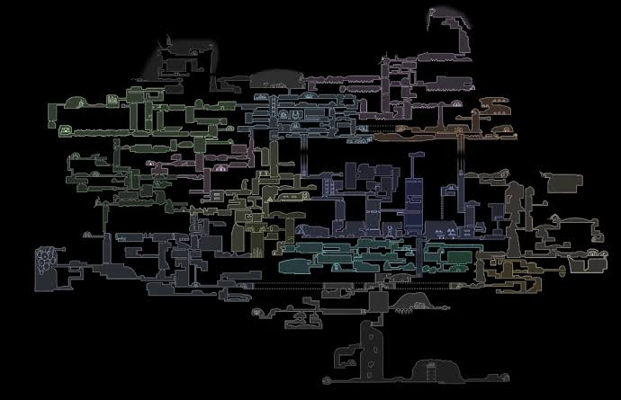

Hallownest é um reino subterrâneo habitado por insetos e criaturasinfectadas.
Conheça os insetos presentes em hallownest
Conheça os insetos presentes em hallownest

Sede: Palácio Branco
🧠
A Infecção não ataca apenas a carcaça, mas domina a mente. Ela apaga as memórias do hospedeiro e substitui sua vontade individual pelo sussurro da mente coletiva.
🔥
O fluido alaranjado faz o corpo inchar com bolhas radiantes, concedendo força cega e agressividade descontrolada a qualquer inseto atingido pela praga.
☀️
Originada nos sonhos e na promessa de uma antiga deusa esquecida, essa energia alaranjada se alastra por Hallownest, rompendo até os selos mais poderosos do reino.